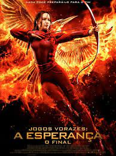
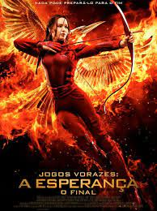

Jake Sully (Sam Worthington) ficou paraplégico após um combate na Terra. Ele é selecionado para participar do programa Avatar em substituição ao seu irmão gêmeo, falecido. Jake viaja a Pandora, uma lua extraterrestre, onde encontra diversas e estranhas formas de vida. O local é também o lar dos Na'Vi, seres humanóides que, apesar de primitivos, possuem maior capacidade física que os humanos. Os Na'Vi têm três metros de altura, pele azulada e vivem em paz com a natureza de Pandora. Os humanos desejam explorar a lua, de forma a encontrar metais valiosos, o que faz com que os Na'Vi aperfeiçoem suas habilidades guerreiras. Como são incapazes de respirar o ar de Pandora, os humanos criam seres híbridos chamados de Avatar. Eles são controlados por seres humanos, através de uma tecnologia que permite que seus pensamentos sejam aplicados no corpo do Avatar. Desta forma Jake pode novamente voltar à ativa, com seu Avatar percorrendo as florestas de Pandora e liderando soldados. Até conhecer Neytiri (Zoe Saldana), uma feroz Na'Vi que conhece acidentalmente e que serve de tutora para sua ambientação na civilização alienígena.
Em Vingadores: Ultimato, após Thanos eliminar metade das criaturas vivas em Vingadores: Guerra Infinita, os heróis precisam lidar com a dor da perda de amigos e seus entes queridos. Com Tony Stark (Robert Downey Jr.) vagando perdido no espaço sem água nem comida, o Capitão América/Steve Rogers (Chris Evans) e a Viúva Negra/Natasha Romanov (Scarlett Johansson) precisam liderar a resistência contra o titã louco.
Após ser resgatada do Massacre Quaternário pela resistência ao governo tirânico do presidente Snow (Donald Sutherland), Katniss Everdeen (Jennifer Lawrence) está abalada. Temerosa e sem confiança, ela agora vive no Distrito 13 ao lado da mãe (Paula Malcomson) e da irmã, Prim (Willow Shields). A presidente Alma Coin (Julianne Moore) e Plutarch Heavensbee (Philip Seymour Hoffman) querem que Katniss assuma o papel do tordo, o símbolo que a resistência precisa para mobilizar a população. Após uma certa relutância, Katniss aceita a proposta desde que a resistência se comprometa a resgatar Peeta Mellark (Josh Hutcherson) e os demais Vitoriosos, mantidos prisioneiros pela Capital